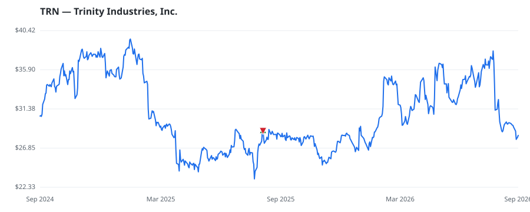

bullish · bearish · n/a — dots: price>SMA10 · SMA10>SMA50 · SMA50>SMA200 · up>down volume (20d)
Capital Goods · mid cap
Members who bought TRN earned a dollar-weighted +0.0% from their disclosure dates, versus +0.0% for the S&P 500 over the same holding windows (+0.0% alpha).

▲ green = a disclosed purchase · ▼ red = a disclosed sale (plotted on disclosure date)
Trinity Industries Inc sells and leases railroad products and railcar maintenance services in North America. The company operates under the name TrinityRail in two main segments: railcar leasing and management services, which owns railcars and provides fleet management and administration services; rail products, which builds, sells, and modifies freight and tank railcars and their components; and all other, which sells highway products such as guardrail and other highway barriers. Customers include railroads, leasing companies, and shipping companies in agriculture, construction, consumer prod RAILROAD EQUIPMENT · website
| Revenue | $2.2B | Net income | $277.3M |
|---|---|---|---|
| Operating income | $649.2M | Diluted EPS | $3.05 |
| Assets | $8.4B | Equity | $1.1B |
| Member | Chamber | Out-performer | Disclosed buys $ | Return on buys |
|---|---|---|---|---|
| Lisa McClain | house | — | $8K | +0.0% |
Disclosed $ figures are bracket midpoints — filings report ranges (e.g. $1,001–$15,000), not exact amounts.